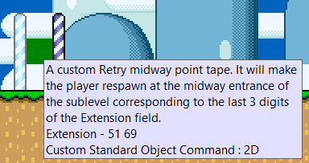

Inside the resources/amk folder you can find a custom a custom SFX file (resources/amk/sfx/Death Prelude.txt) and a custom death music file (resources/amk/music/01 Miss (no intro).txt). These can be used to keep a vanilla-feeling sound on death with Retry enabled.
The SFX is the intro to the vanilla death music, and it is recommended to use as the Retry death SFX. To do so, insert it as any other SFX in AddmusicK: move the txt file inside AMK's 1DFC folder, then add it as a new entry in the Addmusic_sound effects.txt file under SFX1DFC. To configure Retry to play this SFX on death, in settings_global.asm change !death_sfx to the value you used in Addmusic_sound effects.txt, and set !death_sfx_addr = $1DFC.
The music file is the vanilla death jingle but with the initial part removed (the part that is played in the custom SFX provided here). This can be used as an alternative death jingle for when choosing "Exit" in the Retry prompt: normally this plays the vanilla death jingle, but it might be weird to replay the death SFX part of it, so you can insert this alternative variant in your Addmusic_list.txt and configure Retry to play that only when using "Exit". To do so, change !death_jingle_alt in settings_global.asm to the number you inserted it as in AMK's list.
NOTE: you don't need to insert this as a global song.
Since version 3.60, Lunar Magic has support for custom tooltip files for custom objects, to allow users to display custom tooltips when hovering over a custom object. To have this apply to the custom midways inserted by Retry, follow these steps:
NOTE: if you already have a .osc file for your ROM, just copy the entire contents of retry_midways.osc into it.
Now hovering over the custom Retry midways will show somewhat useful information regarding the object, depending on the type of midway inserted.
The graphic files used by Retry can be found in the retry_config/gfx folder. Note that these are uploaded dynamically to the sprite GFX pages when needed, so you don't need to insert them yourself in your GFX files, but you're free to edit them with tools like YY-CHR if you so wish (they're all 4bpp files).
| File | Purpose | Default Palette |
|---|---|---|
| prompt1.bin | Retry prompt tiles used in the prompt when the prompt black box is enabled (!no_prompt_bg = 0). Note that the two black tiles next to the cursor are needed. |
8 |
| prompt2.bin | Retry prompt tiles used in the prompt when the prompt black box is disabled (!no_prompt_bg = 1). Note that the two transparent tiles next to the cursor are needed. |
8 |
| digits.bin | Numbers used by all of the sprite status bar counters | Any |
| x.bin | "X" tile optionally displayed beside the sprite status bar counters | Any |
| indicator.bin | Single 8x8 tile used by the Retry indicator in the sprite status bar | 9 |
| item_box_8x8.bin | Single 8x8 tile used to draw the smaller item box in the sprite status bar | B |
| item_box_16x16.bin | Four 8x8 tiles used to draw the full item box in the sprite status bar | B |
| coins.bin | Two 8x8 tiles used by the sprite status bar coin counters (the first is used by the coin counter, the second by the Dragon Coin counter) | 8 |
| timer.bin | Single 8x8 tile used for the sprite status bar timer icon | 8 |
| lives.bin | Two 8x8 tile used for the sprite status bar lives counter icon (the first is used for Mario, the second for Luigi) | 9 |
| bonus_stars.bin | Single 8x8 tile used for the sprite status bar bonus stars counter icon | 9 |
| death.bin | Single 8x8 tile used for the sprite status bar death counter icon | 8 |
Inside the resources/examples folder you can find various asm codes that use some of the Retry features, to better show what is explained in the other pages. Feel free to use or adapt them for your project. Note that in order for the example blocks and patches to work, you'll need to copy Retry's ram.asm in the blocks/patch folder. This is not needed for the UberASM codes.
| Type | Name | Description |
|---|---|---|
| Blocks | invisible_cp_normal.asm |
This is an example of using the !retry_ram_set_checkpoint RAM address.This block will trigger a silent checkpoint when touched that will act as a vanilla midway. So, by default it will set the checkpoint to the midway entrance of the main level, but if using %checkpoint(<sublevel>,1) in Retry's settings_local.asm, it will set the checkpoint to the midway entrance of the current sublevel.
|
| invisible_cp_custom.asm |
This is an example of using the !retry_ram_set_checkpoint RAM address.This block will trigger a silent checkpoint when touched to the secondary exit defined by !secondary_exit.
|
|
| Patches | prompt_type_title_select.asm |
This is an example of using the !retry_ram_prompt_override RAM address.This patch will change the 1 PLAYER GAME/2 PLAYER GAME options on the file select screen to INSTANT RETRY/PROMPT RETRY, to let the player choose which one they want. To customize it you can edit the tables at the bottom of the file.
|
| UberASM | red_switch_remove_cps.asm |
This is an example of using the retry_api_reset_all_cps API routine.This is a level UberASM that will make so whenever a red switch (sprite C8) is pressed in the level, it will remove all the checkpoints in the game.
|
| title_screen_items_icon.asm |
This is an example of using the retry_api_get_sram_var API routine.This is a gamemode UberASM (to be inserted in gamemodes 8 and 9) that will draw a tile next to the save files in the load/erase file menu on the title screen, if the corresponding save file has a certain number of items (by default, moons) collected. This only works if the item is saved in SRAM using Retry's save feature (see SRAM Tables).
|